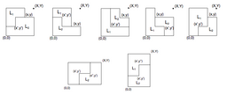
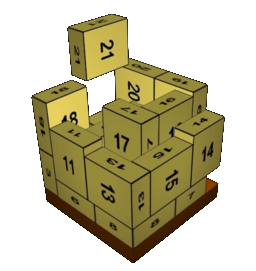

Lauro Lins
Information Visualization Department - AT&T Labs
33 Thomas St
New York, NY 10007
llins [at] research.att.com
Research Interests
• Back-end Data Structures for Large Data Interactive Visualization
• Information Visualization
• Layout Algorithms (e.g. Graph and Tree Drawing)
• Visualization Systems
• Metric Spaces (on Graphs, Graphs labeled with Graphs)
• Combinatorial Optimization
I am a researcher at AT&T currently working techniques to enable interactive visualization for Big Data (e.g. nanocubes page and source).
Before AT&T, I was a research assistant professor at NYU-Poly and my research focus there was on the design of interactive information visualization techniques and in the algorithms to produce such visualizations. For example, is a 2011 paper we proposed the idea of using tag-cloud lenses coordinated in multiple views as a natural way to investigate bird habitat preference predictions from a statistical model developed at the Cornell Lab of Ornitology. This technique can be applied in many other domains such as census maps and twitter topic maps.
The flow of patients interactions with the healthcare system is another project I have worked on.
In a more theoretical work, I studied a mathematical characterization that unifies the notion of graph edit distance metrics and subgraph-based metrics. This characterization makes it easy to see different distance metrics on complex objects. For instance it is easy to generalize previous metric formulas on simply labeled graphs to work on graphs whose node and edge labels are itself graphs.
I have also worked on a generalization of vector drawing systems (e.g., Inkscape, Illustrator) that handles data and that naturally supports mixing and matching visualization techniques (e.g. plotting, network drawing). Our hypothesis is that the free-form interactive composition flow of this system can be effective when exploring heterogeneus data. Our prototype system based on this generalization of vector drawing systems is called called Defog.
Publications
| Nanocubes for Real-Time Exploration of Spatiotemporal Datasets. Lauro Lins, Jim Klosowski, and Carlos Scheidegger. IEEE InfoVis 2013. Best Paper Honorable Mention. | |
| VisCareTrails: Visualizing Trails in the Electronic Health Record with Timed Word Trees, a Pancreas Cancer Use Case. Lauro Lins, Marta Heilbrun, Juliana Freire and Claudio Silva. VAHC 2011. | |
| BirdVis: Visualizing and Understanding Bird Populations. Nivan Ferreira, Lauro Lins, Daniel Fink, Steve Kelling, Chris Wood, Juliana Freire and Claudio Silva. IEEE transactions on visualization and computer graphics, 17(12):2374, 2011. [Project] | |
| DEFOG: A System for Data-Backed Visual Composition Lauro Lins, David Koop, Juliana Freira, and Claudio Silva. Technical Report UUSCI-2011-003, SCI Institute, University of Utah, (2011). [PDF] | |
 |
Examining Statistics of Workflow Evolution Provenance: A First Study. Lins, L., Koop, D., Anderson, E., Callahan, S., Santos, E., Scheidegger, C., Freire, J., and Silva, C. Scientific and Statistical Database Management. Lecture Notes in Computer Science 5069, (2008), 573--579. |
| Phorma: perfectly hashable order restricted multidimensional arrays. Lins, L., Lins, S., and Melo, S. Discrete Applied Mathematics 141, 1-3 (2004), 209--223. | |
|  | An L-approach for packing (l, w)-rectangles into rectangular and L-shaped pieces. Lins, L., Lins, S., and Morabito, R. Journal of the Operational Research Society 54, 7 (2003), 777--789. |
| An n-tet graph approach for non-guillotine packings of n-dimensional boxes into an n-container. Lins, L., Lins, S., and Morabito, R. European Journal of Operational Research 141, 2 (2002), 421--439. | |
|  | A 9-fold partition heuristic for packing boxes into a container. Lins, L., Lins, S., and Morabito, R. Investigacion Operativa 7, 3 (1999), 69--82. |
 |
Vismashup: Streamlining the creation of custom visualization applications. Santos, E., Lins, L., Ahrens, J., Freire, J., and Silva, C. IEEE Transactions on Visualization and Computer Graphics 15, 6 (2009), 1539--1546. |
 |
A comprehensive survey of cancer risks in extended families. Teerlink, C.C. and Albright, F.S. and Lins, L. and Cannon-Albright, L.A.. Genetics in Medicine 14, 1 (2012). 107--114. [SRC] |
|
|
Enabling Advanced Visualization Tools in a Web-Based Simulation Monitoring System. Santos, E., Tierny, J., Khan, A., Grimm, B., Lins, L., Freire, J., Pascucci, V., Silva, C., Klasky, S., Barreto, R., et~al. In 2009 Fifth IEEE International Conference on e-Science (2009),IEEE, 358--365. |
|
|
A first study on strategies for generating workflow snippets. Ellkvist, T., Stromback, L., Lins, L.D., and Freire, J. KEYS '09: Proceedings of the First International Workshop on Keyword Search on Structured Data. New York, NY, USA, 2009, ACM, 15--20. |
|
|
A first study on clustering collections of workflow graphs. Santos, E., Lins, L., Freire, J., Silva, C., and Ahrens, J. Provenance and Annotation of Data and Processes: Second International Provenance and Annotation Workshop, Ipaw, (2008), 160--173. |
PhD. Thesis

|
BLINKS: a language to view, recognize, classify, and manipulate 3D-spaces. Lins, L. PhD thesis in Computational Mathematics, Universidade Federal de Pernambuco, (2007), http://arxiv.org/abs/math.GT/0702057. [PDF] [Project] |
MSc. Thesis
 |
Empacotando caixas em gblocos. Lins, L. Masters thesis, Universidade Federal de Pernambuco, 2001. |